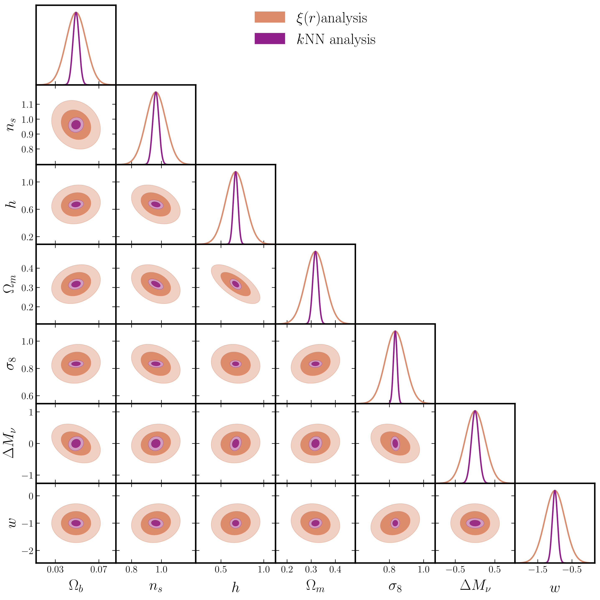
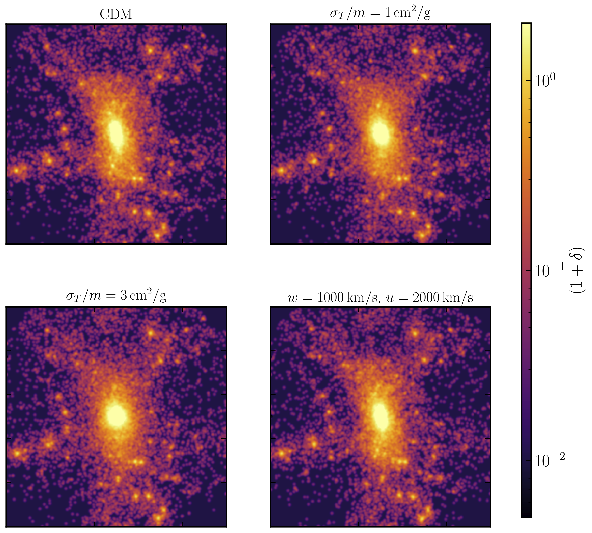
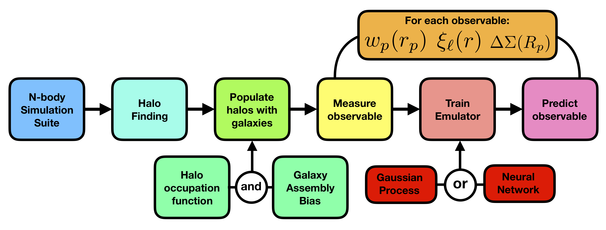

Neutrino mass measurements from cosmological surveys
Neutrinos are the lightest Standard Model particles, but the number density of relic neutrinos from the early Universe are high enough that they affect the formation and growth of structure in the Universe. The size of the effect on various cosmological observables is directly proportional to the total mass of the three neutrino mass eigenstates. Turning this around, precise measurements from cosmology can help constrain the neutrino mass. This is going to be one of the main targets for upcoming cosmological surveys. In this paper, we investigated how well the SM neutrino masses can be constrained by combining measurements on large scales (where linear perturbation theory is valid) from two of these experiments, the LSST at VRO, and the CMB-S4 experiment. In two papers (here and here) led by Alejandro Aviles, we developed perturbation theory frameworks that capture the effects of massive neutrinos beyond linear order.
To fully capture the effect of mass neutrinos on stucture formation, down to small scales where the structure formation process is nonlinear, neutrinos need to be actively modeled in high resolution N-body simulations. I helped develop two new numerical techniques (here and here), which can track the full nonlinear evolution in massive neutrino cosmologies without suffering from discreteness issues plaguing some of the other methods. These advances in simulation methods are crucial for harnessing the information on neutrino mass from nonlinear scales in various surveys.
Neutrinos also produce unique signatures on the clustering of nonlinear objects, like Dark Matter halos, and highly empty regions, called voids. The effect, termed "scale dependent bias" is absent in standard ΛCDM cosmologies. Our paper was the first to point out that the effect is enhanced in voids. In another paper, my collaborators and I explored how this effect can be further enhanced by using information about the halo environment.
New summary statistics for cosmological clustering
The most widely used statistic for capturing cosmological data is the two-point correlation function, or its Fourier transform, the power spectrum. While this is a complete statistical description of a Gaussian random field (which our Universe is expected to be at early times, and on large scales, even today), it does not capture all the information in the field of interest (galaxy clustering or lensing) once gravitational collapse becomes nonlinear. We, therefore, need other summary statistics to describe clustering on small nonlinear scales to fully harness the power of current and future cosmological surveys.
In collaboration with Tom Abel and others, I have worked on developing a (set of) new summary statistics that is sensitive to all higher order clustering in the data, while being computationally inexpensive to calculate. These statistics comprise the distributions of distances to various nearest neighbor data points from a set of volume filling randoms. The first paper using these statistics (named kNN-CDFs) explored the improvement in cosmological parameter constraints (over the two-point function) from mildly nonlinear scales. In a second paper we extended the formalism to also describe cosmological cross-correlations. In this paper, we demonstrated how the kNN-CDFs of cosmological tracers on quasi-linear scales can be modeled using the same ingredients that are used to model the 2-pt correlation function, while in another paper, we measured these distributions in actual data and showed that one detect non-Gaussian sigantures in the clustering of extremely massive galaxy cluster.
Ealier, I was part of a paper that investigated parameter constraints from yet another statistic that is sensitive to higher order clustering - the 1-point distribution function of the matter density field.
Self-Interacting Dark Matter (SIDM) phenomenology
While cosmology and other extragalactic phenomena provide the strongest evidence for an invisible clustering component of the Universe called Dark Matter, very little is currently know about the microphysical nature of Dark Matter. As more precise cosmological data from various experiments comes in over the next decade, it is worthwhile to ask if this data can be used to say something about the properties of Dark Matter. One topic that has garnered a lot of interest is whether Dark Matter has strong self-interactions (SIDM), and the signatures of these self-interactions on various cosmological observables.
To explore the effects of self-interactions in detail, I helped develop code (described here) that could be used to study the most general elastic cross sections. Using simulations run with this code, we found in this paper that weak lensing measurements around massive clusters can provide very tight constraints on the interaction strength at cluster scale.
In another paper, we studied self-interactions on the Milky Way scales, and found that self-interactions leave distinct imprints on the satellite populations of a Milky Way like system, both in radial distributions, and velocity distributions. In another paper focusing on the effects of DM microphysics on the satellite population of the Milky Way, we explored how the presence of the LMC, and its associated satellites, can be used to distinguish various models of DM.
As part of the LSST Dark Matter group, I helped put together this document which explores how the LSST survey at VRO can help constrain various dark matter models.
N-body Simulation suites and Emulators
In the coming decades, most cosmological analyses will make use of results from suites of high resolution N-body simulations run over a wide parameter range. Among other uses, these simulation efforts are the starting points for the most promising methods of simultaneously learning about both cosmology and galaxy formation processes, which are entangled on scales where future cosmological surveys will have the most precise data. I have been involved in some of the largest simulation efforts of this sort in the world. These include the Aemulus project, the Quijote simulations, the Hades simulations, and the UNIT simulations.
In the Aemulus project, we aim to combine the outputs of the N-body simulations, along with models of the galaxy-halo connection, and machine learning techniques to make accurate predictions for various nonlinear observables as a function of cosmology. These predictions can then be compared to data from surveys to jointly constrain cosmological parameters and galaxy formation physics.